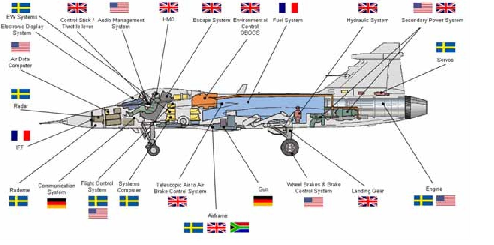
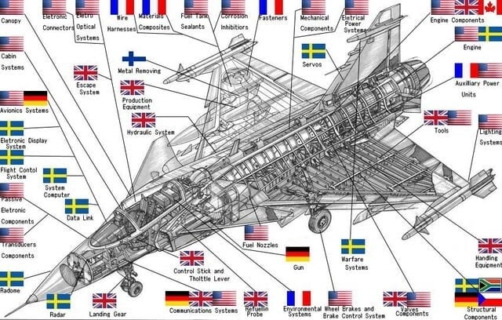
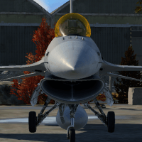

농리펜
kf21 국산화율 65~80%
그리펜 50% 미만


농리펜
kf21 국산화율 65~80%
그리펜 50% 미만
델타익이 람다익이는 초금 일베충같으니까...
미친놈아ㅋㅋㅋㅋ
익이야.....
돌았냐 진짜 ㅋㅋㅋㅋㅋㅋㅋㅋㅋㅋㅋㅋ
아니 너 똘게이야? ㅋㅋㅋㅋㅋㅋㅋㅋㅋㅋㅋㅋㅋㅋㅋㅋㅋㅋㅋㅋㅋㅋㅋㅋㅋㅋㅋㅋㅋㅋㅋㅋㅋㅋㅋㅋㅋㅋㅋㅋ
ㅋㅋㅋㅋ 미친
트잇따 칠면조들 Kaan 부품별 국적 해체음미 해주면 좋아죽음
kaan아직 개발중이라 나중에 최종사양이 국산화 좋을수라도 있지 인도새끼들 테자스는 걍 엔진빼고 다 즈그꺼래ㅋㅋ
???: MWF는 존나 잘 나올거다. 초도비행때 보자 씹새야(대충새가물고날아가는콘)
80퍼면 꽤 높네
지금 당장은 65%고 블록업과 엔진개발등으로 80%까지 올리는게 목표인걸로 알음
엔진 기술 없는게 너무 꼽다 ㅠㅠ
요즘 하는 꼬라지 보면 금방 대체할 수 있을거같긴함
엔진 기술이 4대 역학의 집합체라서 개쩌는 기술이긴 함
꼭 얼치기들이 설계하고 체계통합는걸 좆으로 봄
ㅋㅋ 부품 사다와서 만드는게 쉬우면 개나 소나 다 만드는 건데
해보라고 하면 못할 얼치기들이 할 줄 아는 건 말 뿐이라
어케든 국까해야만 지들 조져버린 인생이 덜 비참하다 안카요!
국산화율 고집하다가 주력전차 한대에 백억씩 주고 뽑는나라 바로 근처에 있는데 어디 모자란 새끼들이지
엔진만 국산화 하면 사실상 100퍼센트나 마찬가지
저게 부품수를 기준으로 할수도 있고 전체 기체의 가격 비율로도 정할수 있는걸로 앎. 엔진만 국산화 해도 엄청 올라감 근데 그 엔진이 최고 어려움 ㅋㅋㅋ
kf-21 부품 국산화 생각보다 높을껄?
유툽댓글에 국산화 비율 개소리 하는애들 있던데 믿거 해야됨 ㅋㅋ
엔진은 언제 국산화 목표임?
농은 왜붙은거야 ㅅㅂ
크기 작다고 저러는듯
나름 최신기종이라 그런줄 알았는데 옛날부터 fa50만한 소형기종인데 있을거 다있고 폭장량 어마어마해서 로리거유라 불리던게 농 ㅇㅈㄹ하는 밈이 더해져 농리펜이라 불린다네...나도 다들 농리펜이러길래 입에붙어서 이참에 찾아봄ㅋㅋ
ㅋㅋㅋㅋㅁㅊ 이러다 비행기박이생기겟네

생기겠네? 이미 있다는 생각을 안 하시는 군요
그냥 이름만 그런거 아님?
KF21 존나 까대던 유튜버 있었는데 누군지 기억이 안나네
그리펜은 근데 스웨덴꺼아냐? 갑자기 kf21이랑 그리펜은 왜?
제목그대로 국까나 해외 밀덕중 애매한 전투기 개발중인 나라 애들이 kf21국산화율 갖고 딴지걸면서 수출잘되 잘나가는 그리펜의 국산화율엔 아닥한단거
엔진 국산화는 안될텐데 계속 실패하고 정부지원금도 안들어가고 있지 않나?
애초에 아무도 관심없는데 뭘
러시아같은나라들은 제트드론부터 양산을 평소밥먹듯이 찍어내는거도 신기하긴해
그냥 컴퓨터 처럼 기본소양영역되버린건가
쇼츠 존나 쓸데없네 델타익이 어쩌고 람다익이 어쩌고 봤는데 하나도 기억 안남